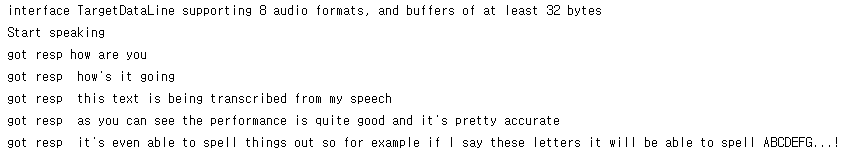

What we've done this week
It was the second to last week of the quarter, the week before the demo. There were only minor fixes like making the menu larger and implementing additional smoothing when resizing so instead of just resizing every frame, we have it resize based on the average accumulated distance within some number of the last few frames.
We also ran into a weird bug where the controller wouldn't update its position when it was inside our field of view. We spent around an hour with Alan debugging this by restarting Unity, restarting the Magic Leap, and restarting the computer. We eventually came to the conclusion that the controller was actually broken because it would only experience brief instances in which it would track the controller correctly and then not for some amount of time.
Besides that, we worked on the poster and the video. Here's a draft of our poster:

We will include some clips from the video below. We also talked to Alan and decided that we should disable the image tracking for the sake of taking the video from the Magic Leap. We did that and made a video. The premise of our video is someone asking where the bathroom is in France and the desk attendant doesn't speak English. They try to have a conversation, but they can't understand each other because they don't speak each other's language. Then the desk attendant brings up the Magic Leap ChatAssist app and the visitor repeats their question. After that, the desk attendant sees the translated text next to them and answers the question. Here's the clip from the video showcasing the translation feature:
The translation is actually closer to, "What is a bathroom?", but this is sort of a problem with AWS Transcribe or their translation feature and we didn't have enough time to retake it because we had prior obligations to fulfill. We got some feedback from Laura from Magic Leap that we'll write about below.
Update on ideas:So Laura came over and talked to the groups working on the Magic Leap this quarter and gave us some suggestions:
- Allow the user to enable/disable image tracking because it's jittery
- Make a giant poster instead of having a marker
- Make an iOS app and release this on the Magic Leap store
We will now address each one of these ideas. For enabling and disabling image tracking, we thought that this was a decent idea and had similar plans a few weeks ago, but thought that it take away from the image tracking portion of the project. Then we faced the jittering problem, but considering that even people from the Magic Leap recognize this as a problem and suggested just disabling image tracking, we think that they also recognize that there might be some issues with their image tracking.
We still need to talk more
Current results:We've been working on stuff that Alan suggested last week, like making the menu larger and working on the jittering.
Plan for next week:
Demo day (Tuesday, June 11th, 2019)!
- Andrew and James will come in a little before 1:00pm on demo day to help pack up and move things
- Andrew and James will set stuff up in the CSE atrium in the corner by elevators at around 2:30pm
- All of us will come and demo from 4:30pm to 7:00pm
- We will be running two demos at a time:
- if they're friends, they can interact with each other after we explain how it works, or
- we can just explain how it works to them individually
Blocking issues:
What we've done this week
We learned a lot from last week's open house and listened to their feedback. Most people who got it to work generally enjoyed the application, but there were still some concerning things like the application lagging and the UI not being super-friendly.
We will address the lag later, but over the previous weekend, James and Andrew worked on the UI extensively, taking pointers/suggestions from Alan's feedback as well as people's feedback from the open house from last week. Explicitly, the bubble now stays present even if the image is not tracked so that it doesn't suddenly disappear when the cameras fail to track the image even though it's in front of it; the language selection and chat logs are now both displayed on the menu and the language selection now uses radial scrolling (like an iPod); and the location and scale of the bubble was made variable depending on user distance. We also changed the offset of the bubble with respect to the image to make the bubble appear so that it overlaps the other persons head just a little bit. This is to make sure that the user could see the bubble without breaking eye contact with the other person, as before they had to look to the side sometime to read the bubble, which not only caused them to break eye contact, but also may cause them to lose track of the image as well.
We also added and tested another image marker to be used for the tracking, and added a second chat bubble that can be produced in the application, so now the user can see the speech of two speakers now instead of one! This was really exciting to see in action, but due to the lag issues, which will be addressed later, even though adding more speakers is relatively easy, we think two speakers is enough.
From the feedback we got regarding the paper not being too sturdy, we made new wearable things to track. We printed out some new images and cut out some cardboard and glued them on there. The necklace setup is the same, with the adjustable knot in the back, but we're still considering something more secure/easy to use, like a paper clip or some type of clip. We'll discuss this in the coming week.
Then James also stress-tested the Magic Leap over the weekend to try to determine the source of the problem for why the camera randomly crashes. He noticed that the camera privileges weren't enabled from the manifest, even though it would work upon building the application on the Magic Leap. We are unsure if this was the cause, but he made sure to allow it for future builds.
Regarding the changes we made, the bubble staying after losing track of the image makes our application rely less on the hardware's image tracking capabilities, which makes the application significantly more reliable. The language selection with radial scrolling is also a lot better in that users are now able to more consistenly select what language they want the speech to be translated and transcribed into. A problem that we saw in the open house was that many people would have the bubble not appear within their view, even though the image was being tracked. This was because the bubble before did not take the distance between the image and the camera into account, thus the bubble and its position pushed the bubble out of view. This has been changed so that the bubble will now resize depending on how far away the user is from the image. Thus, if the user was really far from the image, the bubble will be larger, and if the image is closer to the user, the bubble will be smaller. We also added a threshold to the distance that the image needed to change position for the bubble to change position, and tweaked some values to make the bubble's change in position smoother when the image is moving. Ron and Laurissa tried out the application after these changes and gave some feedback for what we should do. We felt like we were in a relatively decent place after these changes.
For the speech-to-text part, Ron and Laurissa were still having some latency issues with long messages. After some debugging, we found out that there is a memory leak when the messages are being stored in the server for too long (we had been running the server without a restart for a really long time). Normally, Amazon Transcribe chunks the messages by detecting if there are pauses. However, when the messages are too long, it doesn't section the text well, so we had our own method of chunking that introduced a leak by storing the chunks. Therefore, we fixed the memory leak issue and did further improvements on text chunking. For hardware, we ordered two bluetooth microphones that are compatible with our computers since the one we got before could not connect to our laptops at all. This means that our demo speaker can now be fully wireless. However, since they have the same device names, we were having trouble connecting them simultaneously. It was slightly confusing which microphone was connected to which laptop but we figured out that we should connect each microphone at a time to avoid confusion. While both microphones are running, we tested the performance by running our application in the lab with noises and outside the lab where it was more quiet. It appeared that one of the microphone was not picking up what we were saying. After some debugging, we found out that each time we connect to a new microphone, we need to re-run the server so that it will reset the program with the microphone as the input.
We learned quite a bit from the dry run on Thursday about what we should do during our demo, since it's one thing to plan to do something and another to actually do it. We'll describe it more below, but the gist of it is that we will introduce the controller to them later and just give them the Magic Leap with the app loaded in to begin with.
Update on ideas:
We can't do much about the application lagging, as we believe that this is what happens when the Magic Leap has been running an application for too long and overheats. We at first thought that it might've been a memory issue, since everything was lagging and we were unsure about whether Unity was garbage collecting properly. We ended up reducing the number of things we store in the chat log down, but the application still ended up lagging, albeit less than before. We think that there might be a memory leak somewhere, but are unsure about where it could be, since it seems to run well over prolonged periods in zero iteration. Anyways, our workaround for that is to restart the application once it gets too laggy, since that seems to fix that issue. We may investigate these issues going forward, but we believe that it is fine if we just make sure to restart the application if it's too laggy before we give it to people.
Then another major issue is that the camera stops working/the entire system seems to slow down when the Magic Leap gets too hot, so we need to restart the application regardless, but it may have also been a problem with the manifest. If so, we wonder why the problem didn't come up earlier, like when we initially loaded the application onto the Magic Leap.
One thing we realized is that we need to keep the Magic Leaps plugged into something like a charger for the demo so that it doesn't go inactive every every 30 seconds or so. We don't know of any way around this, but keeping it plugged in seems to be the simplest solution. We also need to let the Magic Leap cool off after, so we still need to switch off Magic Leaps to let it cool off. Ideally, we are able to use one of the rooms adjacent to the atrium because noise from other groups could potentially interefere with our microphone setup. We are still unsure about where we will be placed for the demo, so we may need to change some things around depending on where we're located.
Originally, we were asked to do something like this (with what might've happened):
Our original setup for the demo was to have two people wearing Magic Leap devices, and using the app with each other to maintain and augment their conversation. It worked when we tested it, and it can actually do something like this, but then we encountered several problems that may occur during the demo day with this approach, like it's hard to explain to two people at a time how something works. In order for Amazon Transcribe to work well, the users had to speak loudly and clearly and one person's voice could get overheard from the other person's microphone. We also had to adjust the person's wearable marker for the Magic Leap to track properly, which may violate some people's personal space/sense of security. We couldn't really control what they see because it's harder to anticipate what could happen from two users. It's fun to have two people speak at once, but setting it up might be too much of a hassle.
From the feedback from our demo with Ira and Steve, they suggested that we may want to keep the number of Magic Leaps we're using at a time down to one so that it's easier to handle. Along with that, we should keep the introduction short and just hand them the headset before explaining how it works. Steve suggested that we focus on three things in the introduction: helping people who are hard of hearing, helping people communicate, and breaking down language barriers. Then we give them the headset and get it set up so that they can see the chat bubble before going forward with the instructions. After that, we'll explain how it works and ask them if they know another language or if they'd like to see what we say in another language and we can change it based on their responses.
After that, we have two options: we can invite a friend if they have one present to try speaking a few things or get them to switch who is speaking and who wears the Magic Leap or we can introduce them to the controller and the chat log. Ira and Steve suggested that we probably cut the controller because learning how to use it takes too much time out of the demo, but Alan wanted us to possibly introduce it later on as an additional feature. We're fine with either approach, but we're still hammering out which approach we want to take.
Finally, the resizing of the bubble is a bit too active, as the bubble tends to resize even though the image is at a fixed distance. This is most likely due to the fact that the image tracking lags a bit in getting the position of the image, and thus the distance between it and the user, and thus it resizes the bubble accordingly due to that. The solution that we will be working on to improve this is to implement more smoothing the the resizing of the bubble to make the experience more smoother.
Current results:We have a system that now does transcribe the text that a person speaks, changes the language of that text to whatever the user desires, and renders that within a visible display for the user. We also now have the display, the bubble, anchored to an object in the real world that the user can see, the image, and we have support for multiple speakers, so that the user can see the speech for multiple people at once. By leveraging this, it is now also possible for two Magic Leap users to wear these markers, and as long as they are different, be able to see the speech of the other user. There are a few things that can be improved with the UI, like smoothing the resizing, but given the current circumstances, and with the proposed demo plan above, we have a functional application and a fun demo ready for it!
Plan for next week:
The ChatAssist project is in its final stage, the group as a whole will continue to improve the UI and demo setup based on the feedback we received in this week's dry run for the final demo and make the final demo video.
Blocking issues:
Currently there are no blocking issues at this moment.
Andrew and James
This week, we mainly worked on getting the demo working for the open house by applying feedback given on the controller menus and getting the demo set up working. Andrew worked on applying feedback that we got for the menus on the controller while James worked on adding features to the logo that Laurissa made to maximize the image tracking capabilities of it on the Magic Leap, and making the bubble both transparent and resizable for a given amount of general text.
What we learned from the demo on Thursday is that the Magic Leap is pretty janky. For example, the camera randomly crashes in the application, which seems to not occur when running it otherwise. We're not too sure about how to go about debugging this because it seems to only happen when we get out of zero iteration on the Magic Leap, but restarting the app seems to fix the problem. Then there's this new bug that showed up, where the chat bubble seemed to float into the corner (without needing to see the image), which again doesn't happen during zero iteration. The funny part was that when people tried to look at it, it'd keep floating away, which was a little fun to watch, but did not make for a very good user experience. We're not sure if these bugs were apparent all along and we simply haven't run the program for long enough or if things are simply different in zero iteration vs. completely on the hardware. We think that it's partially both, but the initial reason definitely contributed to this, as there are some things that we didn't notice because we never stress-tested it.
One thing that the staff pointed out was that the application seems to lag, which Ron attributed to the web server getting overloaded with messages. Then there was one more thing that we realized as we ran it for longer, that the chat log was actually growing to a point where it was non-neglibible. Andrew ended up changing it so that it cuts half the messages in thet log whenever it gets to 400 messages because there were probably too many things that the Magic Leap had to keep track of in memory, which slowed things down. Removing it seemed to have improved the performance of the application, but there are still several hurdles to cross before we are ready for the final product demonstration.
For the strange color Andrew said he noticed a while back, he thinks he narrowed it down to being how the Magic Leap renders things. The Magic Leap renders things on focus planes, so it tries to make things at different depths in focus and that the weird color switching is going from one focus plane to another. Even if this wasn't the real reason for why it did that, we noticed that the Magic Leap did that regardless of being within our application or not, so we think that it might be related to a bug that was originally on the Magic Leap anyways.
We got some adjustable necklace things and printed pictures of our logo as seen below and used those as a part of our demos. It seemed to generally work, but the paper that the image we were tracking was on was a little flimsy and not really durable. Steve suggested putting it on some cardboard and hanging the cardboard around our necks instead of a sheet of paper. We also wanted to get a colored version of our tracked image, since that would have made the tracking better, but we couldn't print it in time.


James
Due to the feedback from the demo, considering that it could get really frustrating to try and re-acquire the bubble again when image tracking gets lost, as currently, if the person loses track of the image, the bubble disappears, I am thinking of implementing two things to hopefully improve the UX. First, the above functionality described above is going to be removed, so once a person initially gets the bubble, it will not disappear. This is mainly to improve the demo experience and keep it running smoothly, because worst-case, even if the image tracking is bugging out, the demo will still be presentable in that case. The second thing that I am thinking of implementing is an alternate view mode where you can move the bubble to a location that best suits the user's needs, and has the bubble in that location regardless of the image tracking. By doing it this way, even though it may not be the seamless experience that would be ideal in the end, it would still be able to display the bubble in a comfortable manner to best suit there needs. We can still have the current view mode, but for functionality, it may be best to have the first view that I described, with the image tracking functionality not making the bubble, be the default view to speed the demo along.
Other than the feedback from the demo, Alan gave some input for a new feature where we can have an arrow in the UI point to the last position that the bubble was at, so that the user will be able to have an easier time finding the bubble again. I believe this can be done by recording the location of the bubble in the visualizer script, and drawing an arrow accordingly to their position. This is a feature that I plan on implementing and testing in the upcoming week.
We then need to improve the demo setup and durability as said above. I am planning on testing out the logo images in black and white, color, and in various different sizes, with the smallest being the current size as well, to see how the current setup may handle under stress, and how it will be able to handle multiple users at once. The testing above should be very simple, as once multiple visualizers are registered, it should be very seamless to see all of the chat bubbles corresponding to each image. Once a size is set for the image, we can then move on to printing it out on a some cardboard or maybe putting a clear protector around the image/laminate the image to make it more durable.
On a more positive note, it seems like the bubble seems to be sized comfortably during the demo, and the text appears in the bubble appropriately. The translation feature as well seems to be working smoothly, so the bubble can display the languages that we desire, so that feature is settled for the most part, so we can primarily work on the UX of the product.
Andrew
I got a lot of feedback on what to do with the controller from Alan. I spent some time trying to implement the updates for the selections to be on the handlers for the Magic Leap touchpad (the continuous event handler), but that seemed to generally fail and it didn't get called when I was continually touching the touchpad. I'm not sure why that is, but that's how it went. I also changed the scrolling to scale on the speed of the swipe. This resulted in something that was way too coarse to use and people had a hard time selecting exactly what they wanted to use. I'm not sure what Alan was talking about for scrolling down once and only going down one selection, since almost everyone at the demo said that it was too hard to select stuff because it kept overshooting their desired selection. I learned that distance wasn't too great either because it would keep the total distance your finger has been on the touchpad rather than the current and previous updates.
I also got some criticism about how the menu wasn't visible all the time. In an earlier iteration of the menu and chat log, they were fixed on the camera and you didn't even need to see the controller and they could become transparent, but I guess different problems arise from different implementations. There's this weird issue where the Magic Leap won't detect the controller even though it's in front of it unless it's around an arm's length away from it. Alan also pointed out that the menu drifted away, which we didn't notice until we put it on after him. We fixed this by removing the script that was supposed to help smooth the location of the menu and chat log. I think that a similar issue might have happened with the chat bubble.
I plan to explore scrolling in a circle like those old iPods used for song selections, since that was what was recommended by Alan. There was also this suggestion to make both the chat log and the language selection to be next to each other and have one highlighted when you're selecting things in that one and have the other selected when selecting things on the other. Then James recommended adding lines between the chat log lines to actually make it more clear what the separation between each entry was, which is a valid suggestion. I also learned that apparently the when given a Magic Leap remote, scrolling via the touchpad is not the first thing that they would consider when needing to scroll through things. This was a little shocking, but I guess this is just how I always imagined doing something like this with a device like a remote, but I guess I didn't prepare for what others would consider first. We also learned that we need to give a better explanation of what things like "swiping" on the Magic Leap controller means and help users differentiate between the trigger and the bumper.
We did everything that we said we would do from the plan we made last week, but now we need to work extra hard because Ron and Laurissa are essentially done with their parts and the rest of the product relies on us. What's pretty much left is to expand to multiple users, fix all of the glitches that we didn't notice until it was tested by a lot of people, and improve the UI/UX significantly.
Ron and Laurissa:
As in prior weeks, we worked together in person on this part. We especially found it useful to have two people figuring out the response filtering logic (discussed below). We
After getting translation to work last week, in our tests we found that translation API calls result in unacceptably-high latency. This is because of the nature of the Amazon Transcribe service - although it sends "incremental responses" (i.e. 1-word, then 2-words, then 3-words), it often sends 10+ responses all at once. Our server then tries to run make 10 translation calls. While one translation only takes about 100ms - acceptable latency, doing 10 at once obviously causes much more lag. Add in the possibility of the mic client sending even more messages while the translations are pending, and we end up with absurdly high latencies (more than 10 seconds, sometimes).
So, this week we primarily focused on avoiding issues with latency. The only extra information beyond the words themselves that the Amazon Transcribe Streaming API provides is a boolean flag of "partial", where "partial" indicates a speech endpoint was not detected yet. Using the partial flag, our logic for handling this was as follows:
- When a message is received, check if it is a partial.
- If it is not a partial, send it to server (so we never miss a full sentence).
- If it is a partial, then...
- If the message is shorter than 3 characters, we assume there will be more and just skip it.
- If it's exactly the same as the last message, skip it. The last message is already being processed.
- If the first 3 characters ARE NOT the same as the last message (indicator of similarity), then send it. It's probably the start of a new sentence.
- If the first 3 characters ARE the same as the last message, then...
- Assign and increment a global (atomic) ID to the current message as the "latest message id received".
- Start a new thread that sleeps for 100ms.
- After the thread wakes, check if the global ID has changed. If it has, we don't want to send this message anymore! This is because we know newer messages were received, and based on our observations of the Amazon Transcribe API behavior, one of them was either:
- the end (non-partial) of this current sentence, or
- a longer version of this current sentence.
- If the global ID hasn't changed, then send the message to the server. It's determined to be sufficiently "non-spammy".
Below are the results we managed to achieve. In the screenshot, "Transcript:" is for responses (transcriptions) from Amazon Transcribe. "Skipping: " is for transcriptions that were received by the mic, but not sent to the server for translation and display. "Sending" is for transcriptions that are forwarded to the server, where they will be translated (if a translation language is specified) and sent to the Magic Leap for display.
This screenshot is taken in the middle of the output to demonstrate its useful ability to strip out a bunch of inaccurate partial transcriptions such as "This is an example rather than four". Instead, of the 10 transcriptions that are processed, only 2 are forwarded to the server. Yet, those 2 are sufficient to make the transcriptions for the user feel real-time, as they are separated by just a couple words. Last week, we would have sent all 10 of those transcriptions, causing serious lag on the server-side due to stalling for translation requests.
Update on ideas:
We did an in-class demo with plenty of people this Thursday. Our primary observation was that image tracking is still mediocre and often buggy - sometimes not working for several minutes. We believe, at this point, we should implement something that can force a chat bubble to be visible. This way, people can at least experience the speech-to-text component of the project if the image tracking / chat bubble display doesn't work during Demo Day. Before then, we can continue to improve the image tracking as well by testing out and tweeking our demo design, particularly with the way the image is being held and the image itself.
- Get a toggle to force a camera-centered chat bubble display, or
- Make the chat bubble not disappear when image tracking is lost
- We can charge the Magic Leap while it's in use so that it doesn't go inactive
Current results: We currently have a demo that is able to work when set up accordingly, but if something goes wrong while the user is using the application, they may not be able to use the app again, which is concerning. From what we observed on Thursday, this can result from a variety of things from the image tracking going haywire or the camera on the Magic Leap appearing to be stopping for some reason. Our goal for the next week is to solve this entirely so that the user will be able to use the demo seamlessly for a smooth experience, through the improvements and patches to our product as said above to make the bubble always in the scene of the user, to make it possibly have a customizable location, and to improve the demo setup to improve the image tracking.
Plan for next week:
Ron and Laurissa will:
- Make some more improvements to transcription response trimming / filtering (still buggy with long transcriptions)
- Advise on how to improve the UI/UX more
Andrew and James will:
- Work on the UI/UX extensively
- Change the displays on the controller to show both the chat log and menu at the same time
- Change the scrolling to circle/iPod-scrolling
- Allow anchoring into previously tracked locations (toggle on/off via bumper)
- Make a more durable and comfortable version of our product to use
- Try to figure out why the camera crashes
- Come up with instructions on how to use our product
- Ask more people to give us UI/UX feedback
Blocking issues:
The largest issue that we currently face is that the camera crashes and we don't know why. We believe that this is the main thing blocking our progress for a complete demo, since that sort of undermines the reliability of the application. The server will still work without it and changing it to have the chat bubble still be displayed even though it isn't being tracked is fine, but it would be ideal that the camera is reliable. We are unsure if it is a hardware issue, is something that only shows up outside of zero-iteration, or is a problem with our program.
Andrew and James
Image Tracking 2 3: Electric Boogaloo
We tested different images for image tracking/anchoring and learned that it was able to track images with very
basic features.


We find that the the left image performed the best in terms of tracking ability and range. Based on these results, our plan going forward is to utilize the current image tracking and create images with more complex features to maximize the performance as much as possible. In order to do so, these images are planned to be different variations of a logo for our product.
We attempted to program a QR code reader to track different QR codes and read from them based on something we found off of the Unity Asset Store. As we explored this option, we found that it was infeasible with the time we had and wouldn't perform much better than the built-in image tracking features available on the Magic Leap. We say this because the image tracking is already built in there, so it is probably optimized for the hardware and if the Magic Leap can only do this well with something built for it, it's unlikely that something we hack up over the next few weeks would be much better. We learned that the Magic Leap only allows us to take photos instead of a video stream, so we'd have to take a photo, scan it for multiple QR codes (which QR code readers generally don't do), then realign the anchors. We felt like this would be detrimental to the user experience, as they would have to wait some period of time for the chat bubbles to be realigned. We talked to Alan about these issues and decided that it would be better to spend the next few weeks refining the UI rather than further explore improving the image tracking. Just in case we had extra time, we bought OpenCV for Unity and an example built for the Magic Leap for detecting facial landmarks so that we could improve the anchoring.


Laurissa is making the logo for us and we also spent some more time testing the different images like QR codes and seeing how good the Magic Leap's image tracking is. We learned that if we showed it two QR codes, it could not distinguish between the two. We think that this is the case because the features of a QR code are pretty similar, i.e. black edges/squares and white edges/squares. This means that going forward, we need to make sure that the features are fairly distinct and differentiable.
Video Recording
We tried to record the video directly off the Magic Leap by testing out the Magic Leap mobile app's beta
feature, Device Streaming. We learned that this also uses the camera, so we were unable to record footage
using
this app. We did this because we were concerned about the final video quality of our project, since the
current
solution leaves things to be desired. We are going to experiment further with this by bringing a Google
Cardboard
to put behind the Magic Leap display to see if the video would be more adequate than its current state.
UI Improvements
James has created a resizable chat bubble so that the bubble will dynamically resize to the amount of text put
into the bubble to prevent overflowing. Steve and Ira also suggested making the bubble image transparent so
that
it doesn't occlude the surroundings. Ira also pointed out that we have some unnecessary things on the UI that
we kept for debugging purposes that we should take out, especially since the demo day is coming up. I
encountered
an error when porting the application to the Magic Leap in that is some jittering/lag that happens when
updating
the UI via the script connected to the controller. This issue doesn't come up when scrolling (or when
receiving
text from the server) and it doesn't present any major issues (especially since it doesn't do this when
recording
the chat log or the speech bubble), but it should still be addressed. I think that it might have something to
do
with the timer I set up on the controller to send messages to the controller. He plans to move the timer
outside
in the future so that there's more modularity in the methods. I'm also going to move the chat log onto the
controller so that the user's field of view is less obstructed overall and move it back from the controller a
bit
more in accordance with Alan's suggestions. I also need to make the scrolling through the language list more
intuitive
because the current state of the scrolling is not very accurate.
Steve also suggested that we have some sort of wearable marker, which we had already planned to do in the future, we were planning on doing something that could be clipped on rather than something like a lanyard. We're currently discussing how we should execute this to make it more user-friendly than holding a sheet of paper below their heads. We're going to discuss this during the weekend because the open house is next week.
Internationalization
We imported different fonts for Korean, Japanese, and Chinese and integrated them as fallback fonts for the
base
font we have for the chat bubbles so that we can support more languages in the future. Ron and Laurissa will
talk
about the support for more languages.

The code we wrote this week mainly consists of a web socket manager (with Ron's help), a reduced list of languages with proper encodings for Amazon Transcribe, functions to message the server, and some basic code for smoothing the transition between locations for parented objects.
Ron and Laurissa:
This week, we worked on improving our speech-to-text backend, as well as implementing translation. As before,
we worked together in person on every part. However, we could say that Ron worked more on writing the code for
Amazon Transcribe/Translate, while Laurissa worked more on setting up the AWS account
authentication/credentials and debugging microphone issues on Mac.
The code we wrote this week is primarily in apis/micclient and apis/speechserver. We also worked with the AWS demo app for Transcribe. Ron also figured out how to make the WebSocket connection on the MagicLeap accessible to more than one GameObject using a singleton WebSocketManager (previously, our WebSocket connection was being established by the chat bubble object).
Amazon Transcribe
This week, we swapped our backend from Google Cloud to the Amazon Transcribe speech-to-text API.
We did this because, as discussed in prior blog posts, the Google Cloud Platform Speech-to-Text API
has a query limit of 1 minute of transcription at a time. It also only provides output on pauses,
meaning that long sentences don't provide any data to the ChatAssist user until the person is done talking.
The Amazon Transcribe is more suitable for our needs. It offers up to 4 hours transcription for a single
streaming request, meaning that we don't need to hack together some auto-restarting logic that runs every
minute. It also provides transcriptions on the fly - if you say a 30 word sentence, it'll start giving you
transcriptions only a couple words in. It simply sends further updates on a transcription when it detects the
sentence isn't completed yet.
This is what the transcription looks like:
As you can see, the transcription now sends multiple responses for one spoken sentence. This helps a lot for
longer sentences, like the one below:
The code for this is more complicated than before. We now have to gracefully handle multiple responses on one
sentence. We are still working on improving the code here, as we are running into latency issues when trying
to translate all the responses we get. We will probably need some way to heuristically drop out some of the
responses (if we detect longer transcriptions of the same text have already been received). We also want to
avoid outputting some of the inaccurate detections - these frequently happen when Transcribe detects half a
spoken word as a full word, like "say so" or "pause it" in the above screenshot. We're not sure if it's
possible - we'll have to look more at the API to see if we can get some sort of confidence score about the
transcription.
Amazon Transcribe does seem slightly less accurate than GCP Speech-to-Text. However, we believe it's worth the
tradeoff of losing the 1 minute restriction and long sentence issues. It's good enough to demo, and we can say
it's Amazon's responsibility to make a more accurate product haha.
Amazon Translate
We also set up translation this week. In the backend, the server now tracks each MagicLeap client. Each client
can then request a specific language, and all requests to that client will now be translated before being
sent. This introduces a minor amount of latency per request - however, when combined with the rapid partial
responses from Transcribe, we are encountering latency issues, where text is detected but not sent to the
MagicLeap for a couple seconds due to translation requests stalling the main thread. This will be our primary
focus to fix next week.
We first tried using the Google Translate API. Unfortunately, we ran into a mysterious 403 "Query limit
exceeded" error that we were unable to resolve. Apparently, lots of other people have this issue as well,
since there were a ton of StackOverflow posts about it. We decided to just use Amazon Translate instead, since
neural net architectures for machine translation at this point are pretty standard and any big service
provider probably uses near state-of-the-art models so there's no reason to think Amazon's offering is any
worse. Amazon Translate was much easier to set up, and we have it working now with automatic detection of a
source language, and user selection of a target language. If there is no translation needed, the query is not
made (which reduces latency).
Here is a screenshot of our server translating an English message received from a mic to German and forwarding
it to the MagicLeap.
Full integration with MagicLeap
We discussed this a bit earlier, but we now have fully integrated our server / mic client with the MagicLeap.
Everything works as expected now! We had to resolve some permissions issues to get ChatAssist to run
standalone on the MagicLeap (instead of running through Unity and ML Remote).
Microphone Issues
Our wired microphone works well with our application but it would be nice if it is not wired to the laptop.
We tried to get the wireless microphone to connect to our laptop but for some reason, it is detected as an
output on Mac (rather than a mic input). We have tried different debugging methods but none of them work. We
will spend more time
on trying to make it connect, but if it still doesn't work, we will order a new wireless microphone that
is compatible with a Mac.
Nothing major to update about, but here's a couple thoughts:
- Transcribe sends a *lot* of responses, many inaccurate (due to noise). We should see if we can improve this.
- We'll try to make the UI prettier.
Here's a video of us demoing our translation from English to German on the bubble. The quality is not ideal (it looks much better in person!) but you can make out some of the German text.
Here is a hard link in case the embed doesn't work: https://drive.google.com/file/d/1hFi5NNre3yu277flu2kmQ9Sb00YpArKI/view.
Plan for next week:
Ron and Laurissa will:
- Fix latency issues with mass translation
- Try to not forward partial transcriptions that are inaccurate
Andrew and James will:
- Process language change requests by sending to server
- Testing out how much space we will need for the demo (before Tuesday)
- Adjust offsets and UI to improve user experience
- Test out transparency of the text and depending on results, add controls for changing opacity
Blocking issues:
- We're not sure about how to isolate the voices of the speaker for the microphones, i.e. decreasing microphone sensitivity.
- We need more people to test this so that we can get feedback on our project.
- Amazon Transcribe's transcription is not very accurate, but we can't exactly fix this, and it might be worse for other languages like Spanish.
Andrew and James
Implementing Image Tracking
James and Andrew met up over the weekend to combine the image tracking scene that had the server with the UI from a week ago. We first created the image tracking scene from our first scene that we create with built-in image tracking based on the example provided from Magic Leap. After that, we spent a few hours testing out differently-sized images for tracking. We used a small printed-out version of the original larger image that we have in the demo video and it worked decently. The main problem we had with that was that even covering a small portion of the image gave the Magic Leap a hard time detecting the image, which isn't ideal because we want the end-user to wear some small image that won't get in the way of the conversation. We think that this happens because image tracking/detection is essentially based on feature-detection. A lot of features are based on edges/corners, so it's possible that we were covering up some important features for detection.We're going to try detecting a smaller version of the image as the base for what we're trying to detect so that we have a better idea of what features the image we are going to use for our final product should have. We'll also test out newer images and we're going to revisit the QR code idea because QR codes have clearly defined features. We spent some time on Tuesday after the class testing out microphones. We were there earlier and we came upon a weird bug that moved where the chat bubble was generated around 2000 times further than what we coded. We couldn't find out a reason for why it did that because the code for setting the position wasn't complicated, but it still did that. Eventually, it fixed itself after we restarted Unity. Our group as a whole spent some time trying to get the bluetooth microphone to work. From what we could find online, it seems like it was initially meant for amplifiers and speakers rather than to be used as input for a computer. We were able to get it to run on some websites, but when we try to access it on our application, it kind of just died and wouldn't respond. We also looked for some information on the microphone, but we couldn't find anything relevant on the internet.
Andrew created the initial outline for the presentation and then we all added parts and information about the things that we worked on. Tuesday night, he was informed that the scene that we had that had all the components was broken and that some scripts became unset on some of the components, which was strange because it was working when Andrew left the labs. This was why the UI didn't show up in the demo video. He ended up coming in and fixed it on Wednesday, but he still wonders as to how that happened. Our current hypothesis for why that happened was that we accidentally changed the metadata in some way and it just became lost. We presented on Thursday and we left early to start the blog post for the week.
The code we wrote this week mainly consists of a new chat bubble launcher prefab, the combined unity scene with Andrew's chat language selection UI and James's chat bubbles, a new bubble visualizer script, an attempt at a multiple bubble visualizer script, an updated chat log scrolling script, an image tracking driver script, and finally an image tracking visualizer script.

Ron and Laurissa:
Like in previous weeks, we worked on all of the following progress/code together in person. We both were
involved in every part, but if we had to assign one person to each section then we would say Ron worked
slightly more on the streaming APIs and microphone setup, while Laurissa worked slightly more on setting up
the microphone client.
Most of the code we wrote this week is in apis/micclient
and apis/speechserver.
Streaming Speech-to-Text
Our first order of business was figuring out streaming speech-to-text. In prior weeks, we had set up
speech-to-text for recorded audio. For our application to work smoothly, we need speech-to-text to work live,
which means it must transcribe an open audio stream. To handle this, we use GCP's Streaming Speech-to-Text
API, which requires us to set up an AudioInputStream in Java. We then set up a response observer that receives
transcripts from GCP.
The way the API works is that it reads the audio stream and automatically detects pauses. When it detects a
pause, it does a transcription and sends the transcript to the API caller. This means that you do have to kind
of force pauses into a conversation for there to be transcriptions, but we've found it to be fairly
reasonable. The latency is also quite good - we're able to get and display the transcript within a second of a
pause in speech.
There is one major challenge to overcome here: the GCP streaming API has a hard limit of 60 seconds. It cuts
off transcriptions after this 60 second limit. This is not good for our application - if you're in the middle
of speaking, that audio is not transcribed at all. We are planning to explore workarounds, including
potentially swapping API providers. A preliminary readthrough of docs suggests that AWS has a streaming time
limit of 4 hours, which is much more suitable for our purposes. However, it supports fewer spoken languages.
The streaming transcription looks something like this:

Microphone Client
We set up the microphone client this week. The microphone client is a Java process that does three things:
- The client connects to an audio input (i.e. microphone) on the computer and retrieves an audio stream from that input.
- The client connects the stream to a speech-to-text API call.
- The client listens for responses from the API and forwards them to the central server.
We modified the central server so that it now looks for messages from microphone clients and forwards them to connected MagicLeaps. Our current design is very close to fully supporting multiple microphones - we just need to add an identifier to each client and have the server and MagicLeap handle the identifiers correctly.
Below is an example of what the server log looks like - you can see text being received from an IP corresponding to the microphone client. The disconnection at the end happens because of the 60 second time limit on GCP API calls that we discussed above.
Microphone Setup
It turns out microphones are pretty tricky to work with as audio streams. We ordered two microphones from
Amazon, one wireless and one wired. Thus far, we have been unable to get the wireless microphone to work,
although we'll continue trying different options. Our computers literally just don't detect it at all. We have
gotten the wired microphone working on some of our computers, which is what we use for our demo. Our code
selects the correct dataline to access the microphone and then opens an audio stream reading from it.
Here is the wireless microphone we bought: https://www.amazon.com/XIAOKOA-Microphone-Transmission-Amplifier-Recording/dp/B01HOB5SKE/
The reviews are quite good, so we're surprised that it's been such a struggle to set it up. Our wired mic is a
cheap lavalier microphone that seems to be working alright out of the box.
We are considering buying another microphone to test with, since it's important to us that we have a working
set of mics. Ideally, for the demo we'll be able to have three mic clients running with wireless microphones.
We don't have any major updates on ideas - our vision is still pretty close to what we described in our PRD. A couple clarifying ideas are:
- We may need a different approach for tracking
- We may need to switch to a different API due to challenges from GCP's 60-second streaming restriction
- We will probably pick a couple supported spoken languages and have more languages available to translate to
Here is the video we made for this week's update presentation. In it, you can see that the chat bubble follows the image being held, and that speaking into the microphone results in the spoken words being displayed in the chat bubble shortly after a pause. This fully meets our goals at the beginning of the project for an MVP. We're really excited to have gotten this working! We've also tested the microphone with a lot of background noise by turning up a street walk Youtube video to max volume and speaking next to the speakers, and the speech detection still works well in that scenario!
Here is a hard link in case the embed doesn't work: https://drive.google.com/file/d/10cmtmWWeUHPfuJ4AtT_5Nd3uNWAx-9rr/preview.
Plan for next week:
Ron and Laurissa will:
- Figure out a solution to the streaming 60-second-limit problem
- Set up support for multiple mic clients
- Set up a translation API to display spoken text in different languages
- Experiment with detecting spoken text in different languages (French and Spanish)
Andrew and James will:
- Test out smaller-sized images as the base image for tracking
- Revisit the QR code idea
- Translate the set language to something that the speech-to-text API can interpret
- Cut down the number of supported languages to speed up language detection and for easier testing
- Send messages from the MagicLeap to the server for the choice of language
Blocking issues:
We don't have any major blocking issues. Our primary concerns right now are tracking (built-in image tracking seems to be pretty awful) and the streaming limits, but we have promising ideas for solving both of these problems.
Andrew:
This week, I made the UI that we presented last week better and integrated the Magic Leap controller into the
project. I added a menu for the user to select the language they want the speech to be translated to,
following the feedback for the PRD, and added an initial chat log that we had during our project proposal. The
scene lets users scroll through a list of languages on the left and go through a log of messages on the right
and allows for easy integration with other parts of the project by having public methods that can be called to
get the language the user selects and append to the chat log.
I took the feedback from last week about not having static things on the screen because that obstructs the
field of view of the user and it feels unnatural to have something follow you everywhere as you move your
head, so the boxes sort of float into place and we let the user hide the language selection and chat logs by
scrolling to the center. I added a scroll feature by getting the direction the user swipes on the controller
and made the language selection and chat logs only visible if the user scrolls towards it. The current
iteration of the scrolling is a little janky because it reads off the gestures on the touchpad, which aren't
entirely accurate.
I also tested adding text to the chat log by adding text on the down trigger to make sure that text can be
added. Ideally, the chat log will allow easier support for multiple speakers by distinguishing who said what
when as it'll maintain a transcript of the conversation. If we can't figure out how to anchor the text to some
image, we will still be able to display the text on the chat log; but we will work to avoid this by getting
the image recognition to work for the anchoring.

Alan gave some feedback saying that we should probably consider hooking the menu up to the controller because
that's what people have been doing nowadays with menus in AR/VR. I didn't know this and I plan on working on
that in the future, but I need to focus on getting the anchoring down for the demo next week. I also wanted to
include a video of the language selection and the chat log, but the Magic Leap was running low on battery and
the controller got unpaired. I somehow missed the last resort in the instructions for how to pair it again, so
I couldn't get it to pair and I just put it back into the locker and charged it. James later fixed this.
The code for this work is in the following links: appending
to the chat log, controller
integration, scrolling
in chat log, adding
language selection and scrolling, and the toggle
for the languages.
James:
This week, I made the UI for displaying the chat bubbles better than the demo that we presented last week. I
added some
scripts to the code, as well as created prefabs of the speech-to-text bubbles so that we will be able to
generate as many
of these bubbles as we want. The scene currently presents four bubbles generated by the script in real space
in four directions around the user. These bubbles always are able to face the user so that the text
transcribed is readable
i.e. not flipped in the opposite way. I had some issues early on with the structure of the prefab, as I had it
originally
as a two-part design where I had the bubbles as a separate prefab, and I had an additional prefab for the
canvas that will
generate these bubbles, but they were not able to display. After discussing the issue with John, I changed the
design so that there will be a single empty game object in the scene that will automatically generate these
bubble prefabs, and that
prefab contains a Canvas, image sprite of the chat bubble, and the TextMesh Pro text inside to give the
display. With the
feedback from last week to not have static objects on the screen, the chat bubbles as they are right now are a
step in the
right direction, as you can move around and have the bubbles not be in sight anymore.
More development needs to be done on how much text we should display in the chat bubble, either through
automatically resizing the bubble when text is generated, adding some user interaction to the bubble for them
to resize the bubbles and expand them, changing look of chat bubble via custom image, and etc., but the
following tasks that we have layed out below for next week are more important at the moment.
I also collaborated with Ron and Laurissa to hook up and test the server code that they made with the bubble
generation
scripts so that these bubbles will be able to display the text from that code in roughly real time. More
details and a
video of the demo are presented below in the code integration section.
The code for this work is in the following links: prefab
for the chat bubble, images
for chat bubbles, script
for generating the bubbles, script
for producing the text in the bubble.
On Image Tracking
We started testing out the Magic Leap's image recognition examples last week, but were unable to get the
examples to work, thinking that we needed physical copies of the images. We tested it again after class on
Thursday using images on the computer and printed copies on sheets of paper and met more success, getting
the demo to work on some preset images.
We tried doing the same with some solid-color images and tried to replace the images to see if they could
detect new images right off the bat. The fastest path to a working demo is to take the code they have and
the images they recognize and use those as the basis of our method for anchoring. This will give us a
working product for the demo and we'd be done.
But we want to at least look through the code and see what can be done with it, like push the boundaries
of the size of the image so that people don't have to wear 8.5" by 11" sheets of paper to get this to
work. We will continue exploring this on Friday, the weekend, and days leading up to the demo day. We also
plan on meeting with Alan on Friday.
This week, we had a number of technical challenges which took a long time to figure out, but managed to come up with and build a functional workaround (and plan for next steps) after understanding what the problems were. We continued to work together on this part, since our work required a lot of reading various documentation, finding solutions to obscure problems, and choosing the correct libraries to use, that was more effective with two people searching and discussing design decisions.
Specifically though, although we sat and wrote all the code in person together so we both wrote code for both parts, we can roughly ascribe the C#/Unity-side stuff to Laurissa, and the Java WebSocket server and Google Cloud Platform (GCP) API setup to Ron.
Now we will discuss the various challenges we had in more detail, and the end results we were able to produce.
Running GCP code on MagicLeap / Unity
As a reminder, last week we wrote working API calls to GCP in a generic C# solution in Visual Studio. This
week, we found out that just having C# code does not mean it'll run on Unity. Unity actually runs Mono, a
cross-platform version of C#, whereas Visual Studio uses Visual C#, which is *slightly* different.
Unfortunately, these differences are enough to make it really difficult to run arbitrary C# libraries on
Unity.
Basically, things do not compile out of the box. It's possible to make it work, but pretty complicated. We
tried
a variety of approaches. For example, we tried just copying the GCP packages over to Packages in the Unity
project, but it turns out that you need to make the library you want into a Unity package, which also means
bundling all its dependencies. Otherwise, Unity may occasionally clear out the Packages folder on its own as
it regenerates the solution. We also tried using NuGet with Unity, but couldn't get the configurations to
work. In the meantime, we also found out that the MagicLeap does not necessarily support the C# APIs used in
the GCP codebase.
At one point we also looked at the Amazon AWS API. Unfortunately, their Unity-specific API does not support
speech-to-text, so we would probably run into the same issues trying to use their .NET API.
We decided at this point that while we could invest a lot more time (already took us many hours to exhaust
the
different approaches) in getting GCP queries to run on MagicLeap by building it as a Unity package, it might
make sense to have a standalone server handling those queries. This design choice also makes sense from a
realistic perspective: consumer apps will typically not make API calls directly, since that would involve
exposing the private API key to the client. Instead, most apps that use cloud APIs will send requests from
clients to a hosted server and then run the actual queries through that server. So, it's totally reasonable
for us to follow a similar approach.
Here is what we are envisioning now (we worked out this design as a team of 4, Ron made it
in
Powerpoint):
Conclusion: GCP code is hard to run on MagicLeap. Instead, we've decided to go with a
server-based approach.
Setting up the client and server
We decided to use WebSockets to handle client-server connections, since they seem appropriate for the
long-held socket connections that we want to have for constantly displaying text.
Once again, WebSockets do not exist in native Unity code. Unity has networking code, but it does not play
too
well with non-Unity servers. We looked around at various libraries, and found that MagicLeap actually didn't
support WebSockets at all until recently - a couple months ago - in the Lumin SDK 0.20 version that we're
using. We found that websocket-sharp seems to suit our purposes and was confirmed to work on MagicLeap.
To get the library to be on Unity, we had to build it as a DLL since there is no prebuilt solution for
Windows, which we are developing on. This meant we had to set up the MonoDevelop IDE, since websocket-sharp
was written in Mono (which is why it plays well with Unity). After that, we were able to build a DLL file
containing the library, and we put it in Assets/Plugins in our Unity project.
Once we had the DLL file working, it was just a couple of lines to get a working WebSocket client in
Unity/MagicLeap that would connect to a WebSocket server and be able to send and receive messages.
We then put together a WebSocket server. We decided to use Java for this, since this is the language we're
most familiar with since we will need to write some more networking code in the near future. We also had to
rewrite the code for using the GCP speech-to-text API in Java.
At this point, we have a fully functioning connection between the MagicLeap and our server. The MagicLeap
can
send arbitrary binary strings to the server, and the server can respond with a binary string. This covers
all
the networking functionality we'll need betwen the MagicLeap and non-MagicLeap things.
Conclusion: We have fully working networking between the MagicLeap client and a server now!
The MagicLeap can receive text from the server and display it. The server is getting this text by making a
call to GCP. Next week the server will actually receive the text from other microphone clients that will
individually making calls to GCP. We've found the latency is low enough to be totally acceptable.
The code for our work is mostly in the apis folder. We also hooked up our code in ChatAssist's SpeechToText.cs script.
Integrating our code
We worked together as a team of 4 for this part. Basically, we've now tied our code together so that the
MagicLeap is able to show arbitrary text sent to it from the server. For the sake of this mini demo we also
wrote some code on our server to arbitrarily change the text to a user input, although that functionality
isn't actually needed since the microphone clients will update the server with text data.
Here is a video showing what our project now looks like (should be embedded below but we've also put the
link here):
Plan for next week:
We will continue to integrate our code for our demo on Thursday. Specifically...
Ron and Laurissa will:
- Get the streaming speech-to-text API to work (fairly complex, streams are tough to work with)
- Use a microphone with the streaming API
- Write the microphone client and make it forward data to the server
- Make the server send data to the MagicLeap in a structured fashion
- Update the MagicLeap / Unity code to accept text updates in a structured fashion
Andrew and James will:
- Test the Magic Leap's image recognition capabilities
- Hack up a version of anchoring using the Magic Leap examples
- Determine where we want to generate the messages relative to the the anchor
- Determine what unique images we want to detect
Ron and Laurissa: This week, we tested different Speech-To-Text APIs including Microsoft Azure, Amazon Transcribe, and Google Cloud. We tested them out by using our phone as a microphone since we haven't bought a proper one yet. At first, we thought that the room was too loud to pick up the exact words we're saying and it made us think about how when we demo our final product on our demo day, it might have the same amount of noise. After some trial and error, we found out that it only works for .flac audio files. In the example, they provided a .flac file which worked pretty well. We learned that we have to convert our mp3 file to a .flac file so that it is compatible with it. We decided to use Google's Cloud Speech-to-Text API because it supports widest variety of languages and contains different feature that we found useful. Some of which includes the language detection and multispeaker content.
Andrew and James:
We also tested different ways of generating some preliminary chat bubbles with some text in Unity.
Right now, they are simply objects within Unity that have a fixed text in them. From what we saw,
the text itself is a bit visible, but the visual itself still has much to be desired in terms of
presentation to the user with respect to other objects.
The text boxes are aligned with the camera, which can be good in some contexts with respect to our UI menu
for setting the language of the user, as it keeps the bubble in the view of the user, but it still needs some
more work to be better fleshed out.
What was currently visible by the user is this...
Our current plan for next week is to order some wireless clip-on microphones so that we can test and we also want to get the Speech-To-Text API up and running on the Magic Leap. Additionally, we will develop the pipeline to generate text that can be seen by the user, play around with some of the Magic Leap examples, and develop the chat bubbles more into an actual product which can display text effectively to the user. We will also look into a way to anchor the bubble to something in the real world, ideally something that can be held by a person. We will also look into some chat box assets as well to make them look more appealing compared to what they are now. The overall goal for next week is to combine the work from our two teams to make a soft demo of ChatAssist.
This week, we gave our project pitch in class where we talked about the problem we are addressing with our product, the technologies that we are planning to use, and a timeline of what we plan to accomplish each week. Aditya suggested that we use the spatial mapping mesh to physically drop the chat bubble if we were unable to use cameras to find some unique marker. After class, we decided to get microphones so that we can have more options than just relying on our devices' microphones.
We completed our Product Requirements Document (PRD), which details our project plan with deliverables, features, performance metrics, milestones, responsibilities of each team member, materials and budget, risks, and how risks will be addressed. This can be found at the top of the 'Home' tab.
We worked on the slides and PRD as a group. In the lab session, we set up the Magic Leap and ran into some trouble when working through the guides. We eventually got this cleared up and learned that we could only run our applications on two of the 4 computers we were given because the Magic Leap is a very resource-intensive device. We learned what we needed to do with the Magic Leap and that we needed to update it when it's charged so that it can run the applications we built using Unity.
Our current plan for next week is to have Ron and Laurissa test out different APIs for speech-to-text translation and have James and Andrew display some readable text on the Magic Leap.
One of the problems that we faced this week is that the Magic Leap gets very hot, but Alan told us that we should probably just close all the applications when it's not being used in order to make it less likely to overheat. This may prove to make the device less user-friendly, since people probably don't want something hot on their heads, so we're wondering how other people who develop on the Magic Leap deal with this.
This week, we all got together to discuss possible ideas. In class, we've been working on the various tutorials. We also all worked together on the website and project proposal.
The code we wrote this week was for this website and for the tutorials we did in class.
Originally, we thought of doing some kind of game-like simulation, but we weren't able to come up with a clear direction on the purpose of the simulation. Right now, our idea is to build a conversation tool that displays chat bubbles over people's heads as they speak and records the conversation text. It would use speech-to-text tech and the built-in microphones to figure out where words are coming from. This would be useful for people who need clear transcriptions of speech. For example, it could benefit people with impaired hearing, people who don't speak a language natively, or people in business meetings who want a log of the conversation.
Next week, we will prepare our team pitch and figure out what resources and assets we need to make this project a reality.
Currently, we're not stuck on anything. We're excitedly waiting to finish our pitch so we can start doing real work on our project!